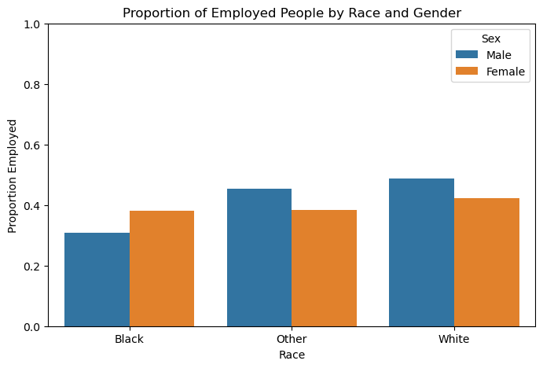
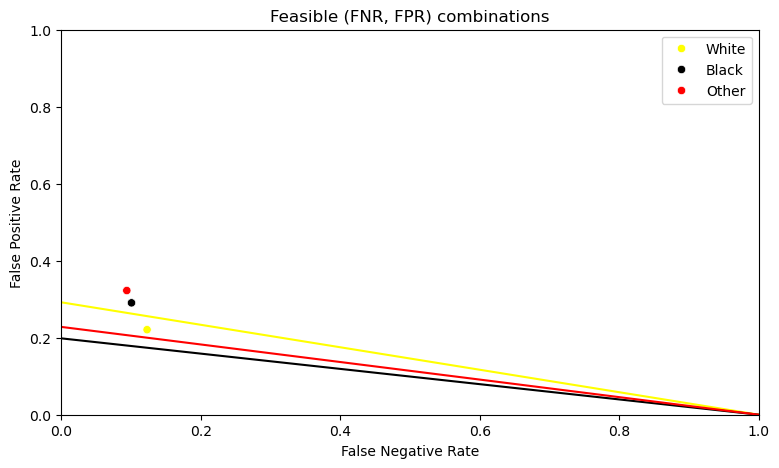

Using the PUMS dataset to predict employment and audit for racial bias.
Author
Cameron Hudson
Published
March 12, 2025
Abstract
Today, we will be using the PUMS dataset to predict employment of members in the state of Michigan that are within the dataset, as well as auditing for racial bias. The process we will be using is first implementing a SVC to predict employment status based on features excluding race and the target variable (employment status), then evaluating our findings based on statistical definitions of fairness, such as calibration, error rate balance, and statistical parity of each racial group (white, black, or other). Through this process, I evaluated my model as passing both approximate cabliration and error rate balance tests but failing the statistical parity test, with white people having a higher rate of being predicted to be employed than black people or other people of a self-identified racial identity. Overall, I note in the conclusion the predicted impact of implementing this predictor model at large and note potential issues/uncomforabilites.
Fetching PUMS Dataset
First we will download the data that we are working with:
from folktables import ACSDataSource, ACSEmployment, BasicProblem, adult_filterimport numpy as npSTATE ="MI"data_source = ACSDataSource(survey_year='2018', horizon='1-Year', survey='person')acs_data = data_source.get_data(states=[STATE], download=True)acs_data.head()
RT
SERIALNO
DIVISION
SPORDER
PUMA
REGION
ST
ADJINC
PWGTP
AGEP
...
PWGTP71
PWGTP72
PWGTP73
PWGTP74
PWGTP75
PWGTP76
PWGTP77
PWGTP78
PWGTP79
PWGTP80
0
P
2018GQ0000064
3
1
2907
2
26
1013097
8
60
...
9
0
12
9
11
9
0
9
10
12
1
P
2018GQ0000154
3
1
1200
2
26
1013097
92
20
...
92
91
93
95
93
173
91
15
172
172
2
P
2018GQ0000158
3
1
2903
2
26
1013097
26
54
...
26
52
3
25
25
28
28
50
51
25
3
P
2018GQ0000174
3
1
1801
2
26
1013097
86
20
...
85
12
87
12
87
85
157
86
86
86
4
P
2018GQ0000212
3
1
2600
2
26
1013097
99
33
...
98
96
98
95
174
175
96
95
179
97
5 rows × 286 columns
Feature Selection
For the purposes of our demonstration, we only need a small subset of the features offered.
For the purposes of predicting employment status and auditing for racial bias we are going to exclude the features ESR (employment status) and RAC1P (race) from the set that we are going to train a machine learning model on.
features_to_use = [f for f in possible_features if f notin ["ESR", "RAC1P"]]
In order to accurately evaluate the accuracy of machine learning models, we are going to train the model using the data from X_train, and test the model using the data from X_test. Note we are seperating the sensitive feature RAC1P into the group array which we will use later on when we audit the model for racial bias.
In order to properly analyze our data, we are first going to answer a few questions regarding the types of people in our dataset that will gives us more insight we when attempt to audit for racial bias.
Here, before we attempt to answer the questions, turn our X_train array back into a pandas DataFrame to make the analysis of the dataset easier.
How many people are in the dataset?
individuals = df.shape[0]individuals
79535
What proportion of these people have a target label == 1? Where 1 whould correspond with the person being employed and 0 would correspond with the person being unemployed.
What are the intersectional trends of people in the dataset that are employed? For example, race (RAC1P) and sex (SEX)?
import seaborn as snsimport matplotlib.pyplot as pltdf_barplot = df.copy()df_barplot['RACE_CAT'] = df_barplot['group'].map(lambda x: 'White'if x ==1else ('Black'if x ==2else'Other'))employment_rates = df_barplot.groupby(['RACE_CAT', 'SEX'])['label'].mean().reset_index()employment_rates['SEX'] = employment_rates['SEX'].map({1: 'Male', 2: 'Female'})plt.figure(figsize=(8, 5))sns.barplot(employment_rates, x="RACE_CAT", y='label', hue="SEX")plt.xlabel("Race")plt.ylabel("Proportion Employed")plt.title("Proportion of Employed People by Race and Gender")plt.ylim(0, 1) plt.legend(title="Sex")plt.show()

Data Analysis Conclusion
With these findings, we gather some important information that can help inform our racial bias audit. We see that the dataset is heavily dominated with white people which may skew our predictor model from being able to accurately predict the employment status of other racial groups. We also see that white people within the dataset have a higher proportion of employed group members than other racial groups, so our predictor model should likely mirror that disparity.
Training SVC Model
Now that we have gathered information, it is time to train predictor model using the training dataset. We will be using a Support Vector Classifier (SVC) to predict employment status of the members of our dataset.
Above we have created the dataframes X_train, X_test, y_train, y_test, so now we must plug them into the sklearn SVC function. We use sklearn make_pipeline function to first run the dataset through the StandardScaler function before moving to our SVC (support vector classifier) machine learning model.
Now we use the model.predict() function on X_test and store the result in y_hat. Now, y_hat is a boolean array which contains all the predictions (employed == True, unemployed == False) for each row of the X_test dataset.
Now that we have created the predictor model, we can now audit the model, first concerning ourself on its overall accurracy. Below, we ask a few questions that will give us an idea of the accuracy of the model.
Overall Measures
What is the overall accuracy of the model?
What is the positive predictive value (PPV) of the model?
What are the overall false negative and flase positive rates (FNP and FPR) for the model?
Overall Acurracy of Model
To get the overall accuracy of the model, get a boolean vector through (y_hat == y_test) which will give an array of truth or false values corresponding to the equality of the prediction and the actual value. To get the percentage of the correct predictions in the boolean vector, we take the mean with the mean() function.
Now that we have observed the overall accuracy of the model, we now concern ourselves with the accuracy of the model as it pertains to the racial groups (white, black, other) that exist within the dataset. Below we ask a few questions:
What is the accuracy of your model on each subgroup
What is the PPV of your model on each subgroup?
What are the FNR and FPR on each subgroup?
To answer question 1, we can make a summary table displaying the accuracy of the model on each subgroup
To answer question 2, we can return to the idea of confusion matrices, making one for each subgroup and calculating the PPV as TP (True Positive Predictions) / TP + FP (False Positive Predictions).
Now that we have evaluted the overall accuracy and the accuracy within groups of the model, we now use statistical definitions of fairness to ascertain a sense of the models “fairness”. Below, we ask a few questions:
Is the model approximately calibrated?
Does the model satisfy approximate error rate balance?
Does the model satisfy statistical parity?
Calibration
In order to show the calibration of the model, we can define a line for each group using sklearn’s calibration_curve() function that shows the relationship between the model’s confidence in an instance x being unemployed and the actual probability of a member of group x being unemployed in the data. The dashed line depicts the result of a perfectly calibrated model.
We can see that for each group, the calibration curve is roughly the same. While the model generally over estimates between scores 0 and 0.4 and underestimates between 0.4 and 1.0, the calibration error is approximately the same between all three groups, making this model approximately well-calibrated.
Error Rate Balance
To answer question 2, we must see if the true positive and false positive rates between the three groups are roughly equal. As we have done before, we display a dataframe that will allow us to analyze the relationship of the true postive and false positive rates between groups. Because we have already computed the false positive rate for each group, we only need to compute the true positive rate.
We can see that between the 3 groups, the TPR and FPR are roughly the same, with the TPR for each group around 90% and the FPR around 30%.
Statistical Parity
To answer question 3 and evaluate the model for statistical parity, we must evaluate if the probability of positive prediction (this person is predicted to be employed) is the same across the different groups (black, white, other).
We can see here that model does not pass the test of statistical parity, as the black and other groups have roughly the same percentage, however the white group is ahead of both by roughly 7 percent.
We will conclude our visual demonstration of the fairness of this model by showing the relationship between the FPR and FNR of each group as well as the possible FNR and FPR values, depicted by lines showing the relationship between the FPR and FNR.
import seaborn as snsimport matplotlib.pyplot as pyplot#FPR and FNR for each groupFPR_groups = [white_FPR, black_FPR, other_FPR]FNR_groups = [white_FNR, black_FNR, other_FNR]#prevalance percentage for each groupwhite_p = X_test[(group_test ==1) & (y_test ==1)].shape[0] / X_test[group_test ==1].shape[0]black_p = X_test[(group_test ==2) & (y_test ==1)].shape[0] / X_test[group_test ==2].shape[0]other_p = X_test[(group_test >=3) & (y_test ==1)].shape[0] / X_test[group_test >=3].shape[0]#Calibrating model group_PPV =min(white_PPV, black_PPV, other_PPV)#line of feasible FPR and FNR values for each groupfnr_values = np.linspace(0, 1, 100)white_fpr_values = (white_p / (1- white_p)) * ((1- group_PPV) / group_PPV) * (1- fnr_values)black_fpr_values = (black_p / (1- black_p)) * ((1- group_PPV) / group_PPV) * (1- fnr_values)other_fpr_values = (other_p / (1- other_p)) * ((1- group_PPV) / group_PPV) * (1- fnr_values)pyplot.figure(figsize=(9, 5))pyplot.title("Feasible (FNR, FPR) combinations")pyplot.xlim(0, 1)pyplot.xlabel("False Negative Rate")pyplot.ylim(0, 1)pyplot.ylabel("False Positive Rate")group_labels = ["White", "Black", "Other"]palette = {"White": "yellow", "Black": "black", "Other": "red"}sns.scatterplot(x=FNR_groups, y=FPR_groups, hue = group_labels, palette=palette)sns.lineplot(x=fnr_values, y = white_fpr_values, color="yellow")sns.lineplot(x=fnr_values, y = black_fpr_values, color="black")sns.lineplot(x=fnr_values, y = other_fpr_values, color="red")pyplot.show()

Balancing the FPR
This plot could also assist in answering the following question: If the classifier threshold is tuned so that FPR is equal between groups, how much would be need to change the FNR?
As shown by the graph, the converging of the line shows when FPR’s for each group become equal. In order to make the FPR equal between each group, the FNR would have to be approximately 0.8.
Concluding Discussion
To conclude our discussion auditing the fairness of this model that predicts employment status, I will answer a few questions regarding the overall fairness concerns and impact of this particular predictor model.
What groups of people stand to benefit from a system that is able to predict a person’s employment status?
I believe that a predictor of employment status could be used for good by the government and companies aimed at getting the unemployed employed or simply want to find potential workers by using the model to find areas where unemployment is likely prevalent and develop resources to get more people employed.
Based on the bias audit, what could be the impact of deploying the model for large-scale prediction in commmerical or governmental settings?
I feel that based on the bias audit conducted, the model is mostly accurate in its predictions, is approximately calibrated and has an approximate error rate balance, so use for large-scale prediction should have a positive impact, if the goal of the predictions is to find areas where people do not have jobs and work to give them jobs. This could also, however, negatively impact certain neighborhoods / demographics that have a large population of predicted unemployment, whereby stores may not want to open in those areas, or goverment/commerical forces make delibrate moves that make the lives of those people more difficult.
Based on the bias audit, do you feel that the model displays problematic bias?
Because the model did not pass the statistical parity auditing test, with the rate of positive predictions (predicting said person is employed) for white people because statistically higher that black or racially self-identified people, the model could reinforce existing racial disparities in employment and therefore displays possible problematic bias.
Beyond bias, are there other potential problems associated with deployment of the model that feel uncomfortable? How could those problems be addressed?
Beyond bias, I feel that because this predictor model is a black box, justification is not provided to those predicted to be employed or unemployed and that to me is uncomfortable. Because the prediction the model makes could have an impact on individual lives if this were implemented at a wide-scale on a goverment level, I would hope an implmentation to appeal or justify the predictions made by the model would be in place, and non-computer generated tasks could also aid in producing accurate predictions.